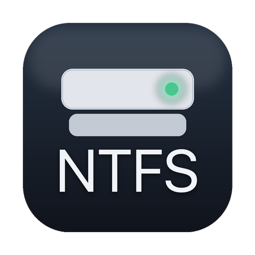

NTFS read & write for macOS. No kernel extension. Free and open source.
Mount NTFS disks and volumes in Finder — read and write — without lowering your Mac’s security or rebooting. Built on Apple’s FSKit, so it runs in user space like a normal app. Free and open source, GPL-2.0, and verified against Windows itself.
Until now, writing to NTFS on a Mac meant one of two things: pay for a driver that loads a kernel extension — which on Apple Silicon requires you to put the whole machine into Reduced Security and reboot — or run an open-source FUSE stack that needs a kernel extension of its own. Apple’s built-in driver reads NTFS but has not written to it since Ventura.
TT NTFS Native is the first NTFS read/write driver for macOS that is free, open source, and needs no kernel extension at all. It is built on FSKit, Apple’s framework for user-space file systems, so it installs like an app, runs with your Mac’s security fully intact, and can be read, audited and improved by anyone.
Full Security stays on. No reboot, no Recovery Mode, no third-party code in the kernel. Uninstalling is dragging an app to the Trash.
Not just self-tested. Volumes this driver wrote were checked by Windows’ own chkdsk, and its crash-recovery was compared byte-for-byte against what Windows does with the same damaged disk.
Links made on the Mac open on Windows. Junctions and directory links made on Windows resolve on the Mac. No other open driver manages both.
A volume Windows didn’t eject cleanly mounts read-only and tells you exactly why. Repairing it is one click, does what Windows would do, and is never silent or automatic.
The driver, the app, the tests, and the engineering notes — including every bug found along the way and how it was found — are public under the GPL.
1.6 MB. A menu-bar app and a system extension, written in C and Swift. No background daemons, no telemetry, no account.
Verified in September 2026 against each vendor’s current shipped installer and documentation. Question marks mean the vendor does not document it and it could not be tested.
| TT NTFS Native | Apple built-in | Paragon NTFS 18 | Tuxera NTFS 26 | NTFS-3G + macFUSE | |
|---|---|---|---|---|---|
| Price | free | free | $29.95 per major version | $28.95 | free |
| Open source | yes, GPL-2.0 | no | no | no | yes |
| Kernel extension | none | none | required | required | required |
| Full Security on Apple Silicon | yes | yes | no — Reduced Security | no — Reduced Security | no by default |
| Write to NTFS | yes | no, removed since Ventura | yes | yes | yes |
| Symlinks made on the Mac open on Windows | yes, verified | — | ? | ? | no, by its own manual |
| Windows junctions and directory links resolve | yes, verified | no, shown as plain files | ? | yes | yes |
| Repairs a volume after a crash | yes — opt-in, reproduces Windows’ result | no | not claimed | yes, undocumented, automatic | no — clears the log instead |
| When recovery cannot proceed | refuses, writes nothing | — | — | resets the journal and mounts anyway | — |
| Per-volume status in a menu bar | yes | no | yes | yes | no |
| Hard links, streams, compressed files | yes | read only | yes | yes | yes |
| Create compressed files | not yet | — | ? | experimental | yes |
| Intel Macs | not yet | yes | yes | yes | yes |
| Format NTFS | no, by design | no | yes | yes | yes |
Full comparison with sources, including iBoysoft and EaseUS, in the repository’s docs/COMPARISON.md.
Absolute throughput depends on the disk and the enclosure, so the only honest comparison is against another driver on the same hardware. Measured on the same 1 TB USB SSD, same files, identical test, against Apple’s built-in NTFS driver — the only other kext-free option, and read-only:
The driver is not the bottleneck on ordinary USB storage: through the same code on fast internal storage, writes sustain several times the USB figure. Random small-block writes are the one area where it still trails, and that is recorded as open work.
Method and raw figures in the repository’s benchmark notes, September 2026.
A file system that writes to your disks should be held to a higher standard than “it seemed to work”. So the bar here was Windows itself.
chkdsk: no problems, and every file read back byte-for-byteThe crash-recovery work went further than any open driver has: journals left dirty by real power cuts were replayed both by this driver and by Windows, and the resulting volumes compared record by record. In one test Windows never saw the journal at all — it only checked a volume this driver had already recovered — and found nothing to fix. Every step, including the mistakes, is written up in the repository.
| Feature | Status |
|---|---|
| Read and write, in Finder and the Terminal | yes |
| Long, Unicode and Windows-illegal names | yes — illegal names refused by default, switchable |
| Hard links, symlinks, alternate data streams | yes, verified on Windows |
| Reading compressed and sparse files | yes |
| Writing inside a Windows-compressed folder | yes — new files are stored uncompressed |
| Repair after a crash or unclean shutdown | yes — the same journal recovery Windows performs, reproducing its result; opt-in per volume |
| 4Kn (native 4 KiB sector) disks | yes, measured |
| Creating compressed files | not yet |
| Intel Macs | not yet — Apple Silicon only |
| Format a disk as NTFS | no, by design — see the FAQ |
| Repair structural corruption (bad records, orphaned files) | no — that is chkdsk’s job; this driver will not make a damaged volume worse |
| TRIM on SSDs | not possible — FSKit gives file systems no way to issue it |
The app lives in the menu bar. It shows each NTFS volume, whether it mounted read/write, and — if it didn’t — the reason and the one action that fixes it.
It has been checked by Windows more thoroughly than any open NTFS driver: chkdsk found no problems on a volume it wrote 626 files to, and its crash recovery reproduces Windows’ own on every real crash captured. It is also young — one Windows build, a handful of disks, a few weeks of hardware testing. Treat it the way you would treat any file system driver you have just installed: keep backups of things you cannot replace, which you should be doing anyway.
Almost always because Windows did not close it cleanly. Fast Startup — on by default in Windows — leaves the NTFS journal open on every shutdown, and so does hibernation. The menu bar tells you which case you have. If there is nothing to replay, one click closes the journal and remounts read/write. If Windows left real unfinished work, the button says so and explains the risk before it does anything.
Apple’s System Settings has a switch for file system extensions, and on macOS 26 it does not work for any third-party module — the system service refuses the request from everything except Apple’s own code. The app does what the switch should do. That is why it is not sandboxed, and the code that does it is a few hundred lines you can read.
Not yet. FSKit itself is available on Intel, and nothing in the driver is architecture-specific, but it has only been built and tested on Apple Silicon. Intel support is on the list.
No, and that is deliberate. NTFS is Windows’ file system; the reason to have it on a disk is that the disk comes from, or goes to, a Windows machine — and that machine formats it. If you are starting with a blank disk on a Mac and want it to work everywhere, format it as exFAT: macOS, Windows and Linux all read and write it natively, with no driver at all. This driver exists for the disks that are already NTFS, not to make more of them.
Yes, for the damage that actually happens: a crash, a power cut, a disk pulled without ejecting, a Windows shutdown with Fast Startup on. In all of those Windows repairs the volume by replaying its journal when you next plug it in. This driver does the same, and on every real crash captured on hardware its result matched Windows’ record for record. The one difference is that it asks first.
What it does not do is chkdsk’s deep structural repair — rebuilding corrupted records or reattaching orphaned files. That is rare, it is Windows’ job, and this driver will never make such a volume worse: if the journal cannot be recovered safely it refuses to write rather than guess.
It is free, it is open source under the GPL-2.0, and there is no catch: no trial, no account, no telemetry, no paid tier. It exists because the Linux NTFS driver is excellent and free, Apple shipped FSKit, and nobody had put the two together. TechTag GmbH did, and is giving it away under the same licence it inherited.
Paragon and Tuxera are mature and support more — Intel, formatting, repair, creating compressed files. They also both require a kernel extension, which on Apple Silicon means Reduced Security and a reboot. This driver’s advantages are that it needs none of that, that it is free and open, and that its recovery behaviour is documented and verified rather than automatic and silent. The table above is honest about where each wins.
GitHub issues. Include the macOS version, what the disk was formatted by, and what the menu bar showed. If a volume ended up read-only, the reason it gives is the most useful single line.
The core is the Linux kernel’s NTFS driver (fs/ntfs, Linux 7.1), ported to run in user space inside an FSKit extension. The journal-recovery engine, the FSKit layer, the menu-bar app, the platform layer and the test suites are new work by TechTag GmbH. Everything is under the GPL-2.0, and every change is on GitHub — including the bugs found in the port and in the original, and how each was found.
If you want the engineering detail — what was verified against Windows and how, what is inferred rather than measured, and what is still open — it is all in the repository’s docs/.